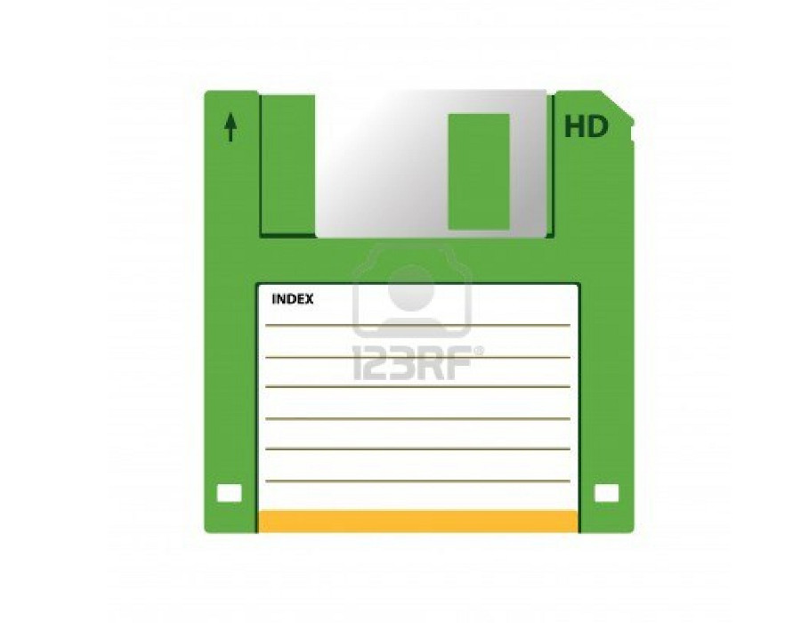
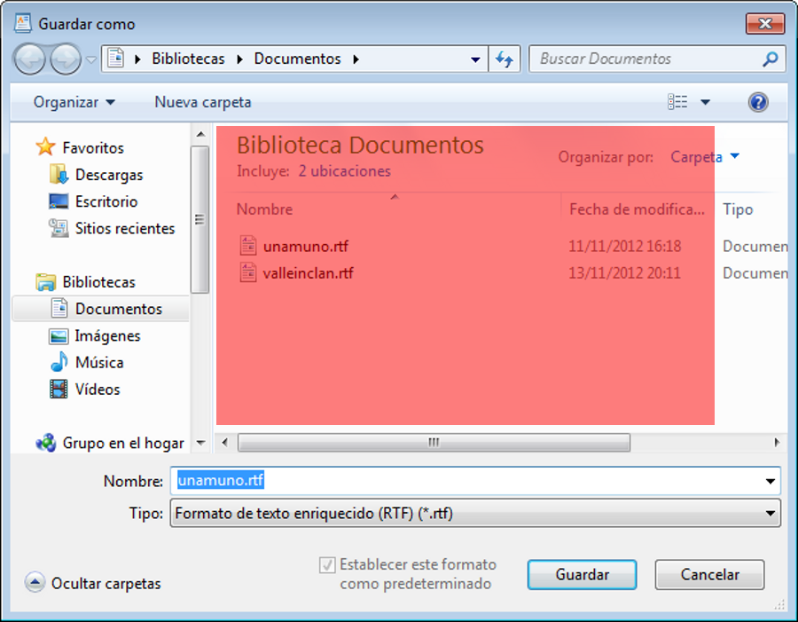
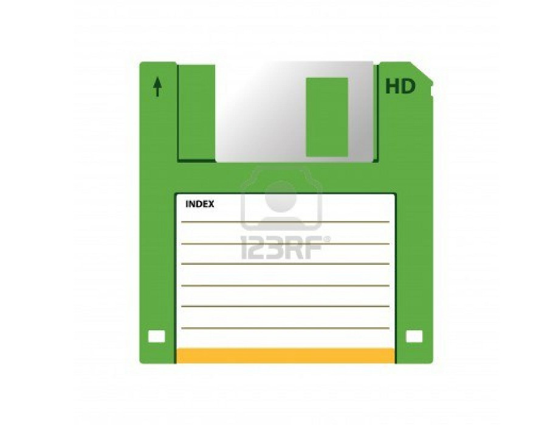
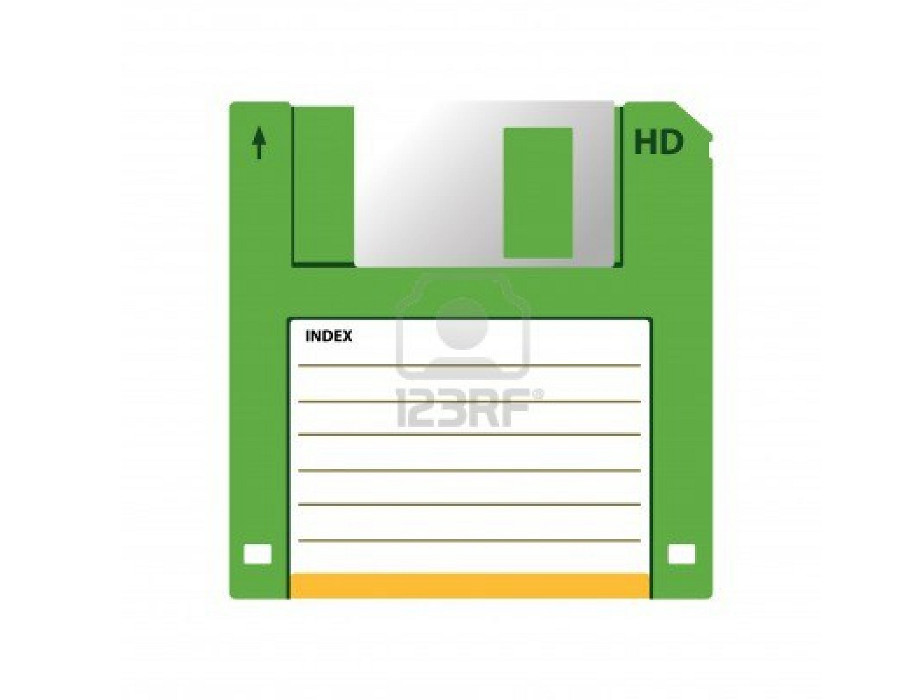

Toda la información con la que trabajamos en un ordenador se mantiene en una memoria volátil, que no se guarda de manera permanente salvo que se lo digamos. Es decir:
Uso de aplicaciones de consulta. Cuando vemos un video, navegamos una página web o escuchamos música no necesitamos guardar nada.
Uso de aplicaciones de creación. Si retocamos fotos, creamos un documento de texto, o diseñamos un nuevo dibujo deberemos guardar nuestra información de manera persistente.
¿Cómo se guarda la información?
Siempre que queramos que nuestro trabajo se guarde y podamos volver a acceder a él entre sesiones, deberemos guardarlo.
Función guardar. Todas las aplicaciones de creación tienen una opción de menú para guardar nuestro trabajo.
Guardar documento. Guardar un documento implica almacenarlo en una ubicación (carpeta) y darle un nombre.
Guardar un dibujo
Guardando un documento
El guardado SIEMPRE se realiza del mismo modo. Todas las aplicaciones comparten esta característica entre si. Lo fundamental que deberemos saber es:
Dónde se guarda el documento. En nuestro disposivo de almacenamiento guardamos los documentos estructurados en carpetas, como ya veremos.
Qué nombre le damos al documento. El nombre del documento es lo que nos diferenciará unos documentos de otros a la hora de volver a acceder a ellos.
Dispositivos de almacenamiento
Para poder almacenar información de manera persistente, deberemos hacer uso de algunos de los dispositivos para este propósito que se utilizan actualmente.
Dispositivos internos. Son dispositivos de alta capacidad de almacenamiento.
Dispositivos portátiles. Son dispositivos de capacidad baja/media que podemos trasladar fácilmente de un ordenador a otro.

Cambia de foto con las teclas: ↑ y ↓
¿Cómo accedemos a la pantalla de guardar?
Buscamos el icono o la opción del menú correspondiente de la aplicación y pulsamos sobre ella (Guardar como...)
Carpeta donde guardar el documento. Podemos guardarlo en el Escritorio, en una biblioteca, o donde queramos.
Nombre del documento.
Terminamos pulsando el botón Guardar.
Cambia de foto con las teclas: ↑ y ↓

Cambia de foto con las teclas: ↑ y ↓
Abriendo un documento
Ahora que ya sabemos guardar, veremos que abrir un documento guardado es un proceso muy similar.
Deberemos saber dónde se guardó el documento. Estará en una ubicación concreta de nuesto equipo.
Deberemos saber qué nombre tiene el documento.
El diálogo de apertura de documento es idéntico al de guardado. Realizaremos la misma operación que en el guardado.
Abrir un dibujo
Menú contextual
Apreta la tecla → para avanzar.
El menú contextual
El botón derecho del ratón nos da acceso a un menú de opciones, contextualizado al elemento sobre el que pulsemos.
Botón izquierdo. Acción por defecto, un click, doble click o arrastrar/soltar.


 
